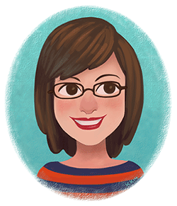

The journey begins!

Hi there, I'm Kristy Kate, a Melbourne based freelance artist. I love to create colourful illustrations and designs that explore fun characters and their worlds.
My ultimate dream is to become a world class visual development artist.
I still have a lot to learn (all artists do), but I'm ready to put in the hard work to make this dream a reality.
I would love to share my journey with you.
So welcome to my blog, where I will be documenting my art, studies and experiences in the pursuit of my dream. With time, I hope it will become a great record of my progress and a resource for aspiring professional artists.
Now, without further ado,
Let the journey begin!
x Kristy Kate
+ + +
Are you on a journey to grow your art skills too? I'd love to hear from you! Leave a message in the comments below, or you can find me on Twitter and Facebook.